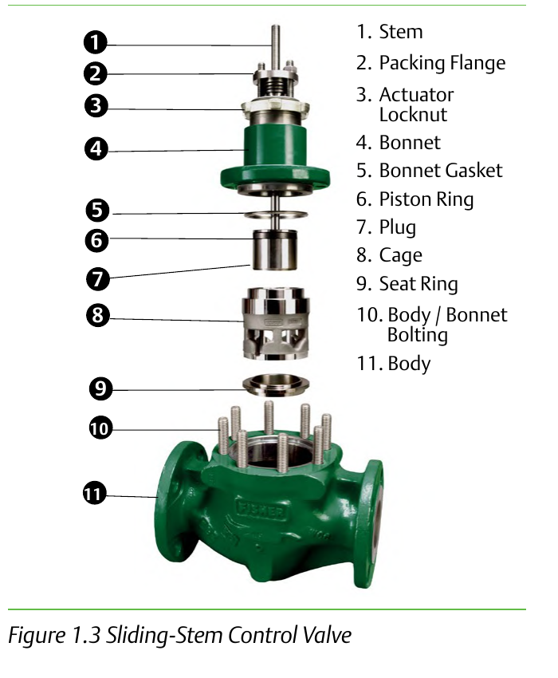

Sliding-Stem Valve — Major Parts

- 1Stem
- 2Packing Flange
- 3Actuator Locknut
- 4Bonnet
- 5Bonnet Gasket
- 6Piston Ring
- 7Plug
- 8Cage
- 9Seat Ring
- 10Body/Bonnet Bolting
- 11Body
After Control Valve Handbook, 6th ed., Fig. 1.3 — used directly; the figure's own printed numbers 1–11 are shown as-is. Component Index: cvh-cmp-sliding-stem-exploded.